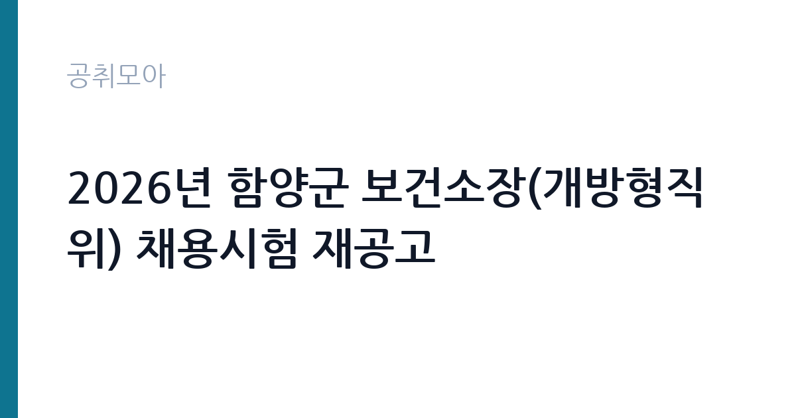

[지자체] 2026년 함양군 보건소장(개방형직위) 채용시험 재공고
경상남도 함양군 · 경남 · 마감 2026-11-12 (D-8) · 출처 나라일터

한눈에 보는 모집 조건
| 기관 | 경상남도 함양군 |
|---|---|
| 공고명 | 2026년 함양군 보건소장(개방형직위) 채용시험 재공고 |
| 고용형태 | 임기제 |
| 근무지 | 경남 |
| 게시일 | 2026-11-05 |
| 마감일 | 2026-11-12 (D-8) |
지원자격, 이렇게 읽으세요
- 지방과학기술서기관 또는 개방형직위 4호 1명
- 접수 ~2026-11-12 마감
- 세부 조건은 원문 공고문 확인
임기제공무원은 공무원 신분이지만 임용 기간이 정해져 있습니다. 전문성이 필요한 업무에 채용되며 임용 기간과 연봉등급이 공고문에 명시됩니다. 임기 중에는 공무원으로서의 복무 규정과 이해충돌 방지 의무가 적용됩니다. 이번 공고는 경상남도 함양군에서 직접 진행하는 자체 전형으로, 응시자격과 제출서류는 공고문에 항목별로 제시됩니다. 이 공고는 재공고로, 임용직급이 지방과학기술서기관 또는 개방형직위 4호로 제시되어 있습니다. 응시자격은 재공고문에 별도로 정리되어 있으므로 원문의 자격 항목을 확인해야 합니다. 공고기간은 2026년 11월 5일부터 12일까지이고 접수기간은 11월 11일부터 12일까지로 이틀에 불과합니다. 접수 방법과 제출서류는 함양군청 행정과 행정담당에 문의하거나 붙임 공고문을 기준으로 준비하십시오. 개방형직위는 민간 전문가도 지원할 수 있지만, 직위별 자격 요건을 충족하지 못하면 서류에서 배제됩니다. 서류는 접수 마감 이후 보완이 되지 않으므로 자격 요건과 증빙 서류를 마감 전에 모두 갖춰야 합니다. 공고문에 명시된 우대 사항은 해당 여부를 확인해 증빙을 첨부해야 가점이 반영됩니다. 우대 사항에 해당하면 증빙을 반드시 첨부해야 하며, 누락하면 가점 없이 평가됩니다.
이 공고의 포인트
이 공고의 첫 번째 포인트는 고용 형태입니다. 임용 기간이 정해져 있지만 공무원 신분으로 복무 규정이 적용되고, 전문성이 인정되면 재임용이나 유사 직위 지원에 도움이 됩니다. 두 번째는 업무 범위가 명확하다는 점입니다. 보건소장(개방형직위) 직무로 채용되므로 배치 이후 담당 업무가 크게 흔들리지 않습니다. 세 번째는 근무지입니다. 경남 지역 근무로 수도권 공고에 비해 지원자 분포가 넓지 않아 상대적으로 경쟁이 분산되는 경우가 있습니다. 채용 규모가 크지 않아 면접 비중이 높은 전형이 될 가능성이 있습니다. 다만 선발 인원이 1명으로 많지 않아 자격을 갖춘 지원자가 몰리면 경쟁률이 높아질 수 있습니다.
전형은 어떻게 진행되나
채용 절차는 공고문에 안내된 순서대로 진행되며, 서류 접수 마감 후에는 추가 접수나 서류 보완이 이뤄지지 않는 것이 원칙입니다. 서류심사에서는 응시자격과 제출서류의 형식 요건을 기계적으로 확인하므로, 경력 증명서의 기간과 직무 내용이 공고의 요건과 정확히 맞아야 합니다. 면접은 지원자 수에 따라 집단면접과 개별면접으로 나뉘고, 직무 관련 질문과 상황 대응 질문이 함께 나옵니다. 합격자 발표는 개별 통보 또는 홈페이지 게시로 이뤄지며 이후 임용 절차가 진행됩니다. 제출서류 원본은 최종 단계에서 다시 요구되는 경우가 있어 사본과 함께 보관하십시오.
이런 분께 추천해요
- 보건행정 또는 보건의료 분야 관리 경력이 있는 분
- 직무수행계획서를 직접 작성할 수 있는 분
- 이틀짜리 접수 기간에 맞춰 서류를 준비할 수 있는 분
지원 전 체크리스트
- 응시자격 요건과 경력 기준을 충족하는가 — 경력은 증명서로 입증해야 합니다
- 임용 기간과 연봉등급, 근무 시간 조건을 확인했는가
- 제출서류 목록을 모두 준비했는가 — 누락 시 서류 단계에서 탈락합니다
- 접수 마감 2026-11-12 이전에 접수 방식을 확인해 제출했는가
모집 일정과 제출 타이밍
공고 게시일은 2026-11-05, 접수 마감은 2026-11-12입니다. 준비 기간은 약 7일로 서류 준비와 자격 증빙을 함께 처리하기에는 넉넉하지 않은 편입니다. 첫 이틀 안에 공고문과 첨부 서식을 내려받아 요건을 확인하고 남은 기간에 증빙 서류를 발급받는 일정이 현실적입니다. 면접은 서류 합격자 발표 후 짧은 간격으로 진행되는 경우가 많으므로 서류 제출과 동시에 면접 준비를 시작하는 편이 안전합니다. 마감일에는 접수 시스템이 몰리므로 하루 전까지 제출을 마치는 것이 좋습니다. 접수 첫날에 몰리면 시스템 접속이 지연될 수 있으므로 오전 시간대 제출이 안전합니다. 경남 근무지는 산업·항만 시설 인근이 많아 근무 환경을 미리 파악하는 것이 좋습니다. 마감까지 일주일 안팎이 남아 서류 준비와 증빙 발급을 병행해야 합니다. 선발 인원이 한두 명 수준이라 지원자 개개인의 서류 완성도가 그대로 평가에 반영됩니다.
직무 이해하기: 지자체
함양군 보건소장은 지역보건법에 따라 보건소의 업무를 총괄하는 자리입니다. 보건사업 계획을 세우고 예방접종과 감염병 대응, 모자보건, 만성질환 관리, 방문보건 사업을 지휘합니다. 관내 의료기관과 복지기관, 유관 단체와 협력 체계를 만들어 지역 건강 지표를 관리합니다. 인력과 예산을 운영하고, 군의회와 군청 부서에 사업 성과를 보고합니다. 보건소장은 의사 면허 보유자가 임용되는 것이 일반적이지만, 이 공고는 지방과학기술서기관 또는 개방형직위 4호로 임용하는 재공고입니다. 현장 업무와 사무 업무의 비중은 기관의 사업 일정에 따라 계절별로 달라집니다.
자기소개서 작성 팁
지원서는 보건행정 경력을 조직 운영과 사업 성과로 나눠 정리하는 것이 효과적입니다. 담당했던 사업의 규모와 인원, 개선한 지표를 수치로 제시하십시오. 개방형직위는 직무수행계획서의 비중이 크므로, 함양군의 인구 구조와 건강 지표를 사전에 확인해 구체적인 계획을 담아야 합니다. 임기 중 달성할 목표를 시기별로 나눠 쓰면 준비도가 드러납니다. 문항별 글자 수 제한을 먼저 확인하고, 각 문항의 첫 문장에 결론을 배치하는 방식이 읽기 쉽습니다. 지원 동기는 기관의 어떤 사업에 기여하겠다는 한 문장으로 시작하고, 이어서 본인의 경험을 근거로 붙이십시오. 감점을 피하려면 다른 기관에 보낼 수 있는 범용 문장을 그대로 쓰지 않는 것이 중요합니다. 기관 이름과 사업명이 문장 안에 자연스럽게 들어가야 준비도가 드러납니다.
면접 준비 포인트
면접에서는 보건행정 운영 경험과 조직 관리 능력을 확인합니다. 지역 보건 지표를 어떻게 진단하고 우선순위를 정할지, 감염병 대응 체계를 어떻게 구축할지 묻습니다. 인력과 예산이 한정된 상황에서 사업을 어떻게 조정할지에 대한 질문도 나옵니다. 군청·의료기관·주민 대표와의 협력 경험을 구체적인 사례로 답하십시오. 답변은 상황, 판단, 조치의 순서로 정리하면 전달이 분명해집니다. 모르는 질문에는 모른다고 밝히고 확인 방법을 제시하는 편이 억지 답변보다 낫습니다. 마지막에는 근무 의사와 함께 2026-11-12 이후 일정에 언제든 응할 수 있다는 점을 전달하십시오. 모르는 질문에 추측으로 답하면 감점 요인이 되므로, 확인 후 답하겠다고 밝히는 편이 안전합니다.
급여·근무조건 읽는 법
개방형직위로 임용되면 지방공무원 보수규정상 연봉등급제를 적용받고, 지방과학기술서기관으로 임용되면 해당 직급 봉급표에 수당이 더해집니다. 어느 직급으로 임용되는지에 따라 보수 산정 방식이 달라지므로 공고문의 임용 조건을 먼저 확인해야 합니다. 구체적인 연봉 등급과 금액은 원문에서 확인하십시오. 2026년 적용 최저임금은 시급 10,320원, 월 환산 2,156,880원(주 40시간·209시간 기준)입니다. 고용노동부 고시 제2025-47호로 확정된 금액입니다. 공고문에 금액이 제시되지 않은 항목은 원문 보수표나 처우 설명에서 확인해야 하며 확인되지 않은 수치는 쓰지 않는 것이 원칙입니다. 비교할 때는 월 급여뿐 아니라 상여·명절휴가비·복지포인트·초과근무수당까지 포함한 연간 총액으로 계산하십시오. 기간제라면 계약 기간 동안의 총액을, 무기계약이라면 호봉 상승과 정년까지의 누적 소득을 기준으로 판단하는 편이 정확합니다.
자주 묻는 질문
- 선발 인원은 몇 명인가요?
공고문 기준 1명입니다. 직종별로 인원이 나뉘는 경우가 있으니 모집분야 항목을 함께 확인하십시오. - 근무지는 어디인가요?
경남 지역의 경상남도 함양군 소속 근무지입니다. 세부 주소와 출퇴근 조건은 원문 공고문에서 확인할 수 있습니다. - 보수는 얼마인가요?
채용 신분(임기제공무원)과 기관 임금 규정에 따라 정해지며 구체적인 금액은 공고문 처우 항목에 제시됩니다. 금액이 공개되지 않은 경우에는 원문의 보수표를 확인하십시오.
함께 보면 좋은 공고
[지자체] 2026년 제5회 울릉군 지방임기제공무원 채용 면접시험 시행 공고 — 마감 2026-11-09[지자체] 2026년 제3회 대구광역시 동구 공무직근로자 채용계획 공고 — 마감 2026-11-11[지자체] 2026년 제4회 세종특별자치시 공무직근로자 채용 공고 — 마감 2026-11-18출처: 나라일터 공개정보를 바탕으로 공취모아가 정리한 안내글입니다. 모집 조건·일정은 변경될 수 있으니 지원 전 반드시 원문 공고문을 확인하세요. 본 글은 정보 제공용이며 합격을 보장하지 않습니다.